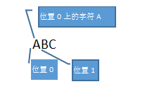
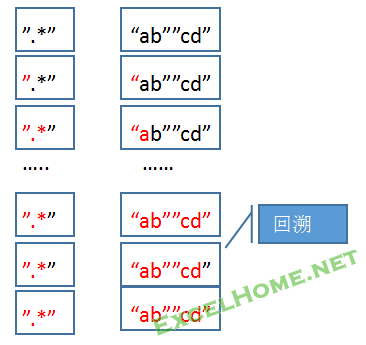

第三篇正则匹配的工作原理 41 一、匹配的基本术语 41 1.匹配 41 2.正则”引擎” 41 3.引擎”眼”中的目标文本-位置和字符 41 4.子表达式 42 二、匹配总原则 42 三、正则表达式匹配的基本过程 42 1 在正则制导下，引擎从目标文本的开始处，依次进行匹配尝试. 42 2 引擎依次在目标文本的每一个位置上，尝试整个正则表达式中的所有子表达和组成元素，直到匹配失败，才移动到下一个位置. 43 3 匹配优先量词总是匹配尽可多的字符 44 4 忽略优先量词总是匹配尽可能少的字符 45 四、穷尽所有可能途径找到匹配---回溯 46 (1)多选结构的回溯 46 (2)量词”？”的回溯 47 (3)量词”*”的回溯 48 五.回溯的总结 48 六.回溯与效率 49 七.灾难回溯 50
一个正则表达式能”匹配”一个字符串,其实是指这个正则表达式能在字符串中找到匹配文本.
引擎本来是指发动机的核心部分, 现也用作IT方面的术语，指经包装过的函数库，方便别人调用，如搜索引擎、图形引擎等。
一个正则表达式不仅仅是一个代码模式,更是用正则符号写出的程序.当我们把它赋值给正则对象的属性时,其内部进行了所谓的”编译”,即对正则表达式进行语法分析，建立一个语法分析树，根据这个树生成一个正则引擎.
正则引擎有DFA和NFA类型之分,而VBscript中使用的是传统NFA引擎.这种引擎是所谓的”非确定有穷自动机(即NFA)”计算机算法的实现.本文接下来讨论的是NFA引擎的工作原理.(这是大多数语言平台上的选择，较流行的MySQL,使用的是DFA）
这是不是让人觉得模糊和深奥,本人也以为是.不过没关系,现在你只需要知道,在正则匹配的过程有一个”东东”在”操控”匹配形为,它就是”引擎”.而且我们也不打算从匹配算法理论角度去解读原理,而是从运用的角度去考察匹配的各种形为.
尽管如此,你应该从正则”引擎”的形成过程,明白一个事实:引擎受制于你编写的正则表达式.合理的正则表达式可以让引擎马力十足,而有问题的正则表达式则可能让引擎慢如蜗牛,更甚者,可能导致引擎空转或熄火.
换一种法,就是匹配是否成功或效率高低都掌握在你手里,这也是我们要研究原理的意义.
对于一段目标文本,在引擎眼中,它是没有单词/句子/段落/等等复杂概念意义的,它看到的只是”位置”与”字符”:如

在表述过程中,时常出现”子表达式”叫法.子表达式是整个正则表达式的一部分.如:括号中的内容,或由”|”分隔的多选分支,或环视内的表达式等.
说到原理,总让人觉得它该是若干条高度概括的结论.不幸的是对正则原理来说貌似任何概括都对理解和利用没有指导意义.如果一定概括,那么,想到的就两条匹配原则:
1. NFA是以正则表达式为主导从文本开始处依次匹配的
2. 如果有必要,NFA总是穷尽所有途径,找到匹配
事实上,只要我们把握了各元字符(序列)及组合的匹配过程,也就把握了匹配原理.
引擎会从左向右在每一个位置上扫描目标文本,同时检查正则表达式的每一个元素。如果产生一个合法匹配,匹配过程就会停在这个位置.
例:
正则表达式:
cat
目标文本:
He captured a catfish for his cat
过程:
引擎先比较<<c>>和目标文本位置0上“H”，结果失败了。于是引擎再比较<<c>>和“e”，也失败了。直到第四个字符(位置3)，<<c>>匹配了“c”。<<a>>匹配了第五个字符(位置4)。到第六个字符<<t>>没能匹配“p”，失败了。于是引擎重新从位置4开始,即引擎再继续从第五个字符重新检查匹配性。直到第十五个字符开始，<<cat>>匹配上了“catfish”中的“cat”.至此,引擎报告成功.引擎停在这个位置.
这时,如果global属性为False,那么,整个匹配结束.反之,引擎从该结束位置(即catfish后的位置上)开始,重复上述过程,继续前行,直至目标文本的最后一个位置.
结论:正则表达式”cat”,并不是匹配”单词cat”.它的本质意义是首先匹配一个字符”c”,紧接着一个字符”a”,再接着一个字符”t”的这样一个字符串.(你能用前面所学知识,只匹配目标文本的最后单词”cat”吗?)
在目标文本中的每个字符位置会首先匹配该正则表达式的所有可能排列,如果都不能匹配,然后才会到下一个字符位置进行匹配尝试.
例:
正则表达式:
fat|cat|belly|your
目标文本:
The drgging belly in decates that your cat is too fat
如果global属性False,最后结果是:belly.
为True,结果是:belly cat your cat fat
从这个结果中看到了吗?匹配结果单词出现的顺序并不是正则表达式的分支排列顺序,而是目标文本中出现的顺序.
分析过程:在”The drgging “之前的每个位置上,匹配都是失败的.这时,引擎移动到下一位置,即目标文件”belly”的”b”前面,而该位置上<<f>>不能匹配b,结果失败,这时用下一个子表式的开始字母<<c>>与”b”匹配,还是失败;当用再下一子表达式(belly)的开始字母”b”尝试时,匹配成功,接着测试正则后面的字符,最终在该位置上得到成功匹配”belly”,引擎在该位置上停止,它不会在此位置再去尝试下一个子表式.所以,我们得到了第一个结果是”belly”.
例:正则表达式
jane|janet 或 janet|jane
分别匹配目标文本: janet and jane
朋友们可以自己测试两种匹配结果.并分析原因.
结论:
1. 正则匹配总是优先选择目标文本中最左端的匹配结果.
2.如果在目标文本的同一位置存在两个选择分支都可匹配的时候,分支的排列顺序将影响匹配结果.你可增加单词边界或改变排列顺序来达成自己的目标.
3.将目标文本中最可能会被找到的字符放在前面,会在性能方面有较小的提高.
匹配优先量词:
? * + {n} {n,m}
它们存在匹配上限和下限,总是匹配尽可多的字符,直到”匹配上限”或没有符合要求的字符为止.
例: 正则表达式:
.?
目标文本:
Abc
选项:global为false
匹配结果是: A
分析: ?表示匹配0个或1个除换行符的任意字符,由于它是匹配优先,所以,选择了匹配1个字符,而没有选择匹配0个.
例:正则表达式
\d+
目标文本:
March 1998
匹配结果:1998
分析:在位置6上成功匹配字符”1”,而”+”表示可以无限地继续匹配下去,所以直到字符”8”后面位置上匹配失败. 但”+”的意思是只要能匹配上一个字符就算匹配成功,所以引擎最后报告匹配成功,得到上面的结果.
例:正则表达式
^Subject:(.*)
目标文本:
Subject:
匹配结果:Subject:
$1变量值为空.
分析:目标文本的开始位置直到”:”号,引擎只进行简单的逐一字符比较,每个位置上都是匹配成功的. 但正则表达式还有”.*”部分(注:括号不会改变匹配过程),而目标文本已经没有字符可匹配了,但”*”表示即使匹配到0个字符(即没有得到匹配)也是成功的.所以,引擎报告匹配成功,得到如上的结果.(如果正则表达式中用?代替*,是一样的结果;但如果用”+”代替”*”,则整个匹配过程失败,无匹配结果,你能分析原因吗?)
再给一个例了:
正则表达式:
^.*(\d+)
目标文本:
Copyright 2014
你能推测最后括号捕获到的结果吗?也就是$1的值是什么呢?
它不是我们想像的”2014”,而是只得到一个字符”4”.为什么是这个结果呢?
分析: “^.*” 中”*”号的贪婪性(人性?)会将目标文本的所有字符匹配,直至结尾,引擎检查”\d+”时,结果没有字符可匹配了.引擎这时是否就报告整个正则表达式匹配失败呢?记得上面讲到一个匹配总原则:”引擎总是穷尽所有途径,找到匹配”. 根据这个原则,正则中,每个部分的匹配只要不越过它们的”底线”,就尽可能让整个匹配成功.所以”.*”首先交还一个字符”4”,让”\d+”匹配,由于”\d+”的底线是匹配一个字符就可成功,而对”.*”来说少一个字符没有导致自己匹配失败.引擎这时发现每部分都匹配成功了,赶快报告匹配结果吧.于是就有了上面的结果.
如果这个例子中正则表达式是
^.*(\d{4}) 或
^.*(.*)
情况结果又如何呢?
结论:最后的几个例子告诉我们:慎用表达式”.*”或”.+”,在编写正则表达式时,如果可能尽量用较具体的表达式代替".";如:上例,假如我们希望的结果是提取"2014",那么,可用\D+代替".*".
忽略优先量词:
?? *? +? {n}? {n,m}?
它们忠实贯彻”总设计师”的战略决策:”摸着石头过河!”.在匹配的过程中,它们总是自己先得到最少匹配,观察一下,正则表达式中,紧跟它后面的元素或子表达式,如果后面子表达式不需要(不能匹配),自己才继续匹配下一个字符.
例:正则表达式:
<.*?>
目标文本:
<em>aaa</em>
匹配结果:<em>
分析: 在开始位置,”<”匹配成功,接下来”.*?”部分以最少匹配0个字符(即不匹配),宣布匹配成功;让它后面紧跟的”>”部分尝试匹配目标文本中的”e”,显然”>”匹配失败,于是,”.*?”选择匹配一个字符,从而成功匹配"e";引擎移到下一位置,先让”>”又尝试,还是失败,于是”.*?”再匹配”m”,匹配成功;移到下一位置,用”>”匹配目标文本在该位置上”>”,匹配成功.到此,正则表达式中的所有子表达式都得到了成功匹配,所以,引擎宣布整个匹配结束.结果<em>.
当然,如果global属性设置为True,那么引擎将一如既往进行下去.从而,又得到一个结果</em>
思考:用正则表达式
.*?
匹配文本:12d
匹配结果是什么?
如果用正则表达式
.*?d
匹配结果又是什么?
结论: 对忽略优先量词来说,只有因为它们匹配得太少,导致整个匹配失败的时候,它们才会匹配更多的字符.这个结论的意义是:在编制正则表达式时,注意避免各子表式都是可选项的情形.
实际上NFA能够找到所有可能的匹配,要归功于正则的一个最重要原理----回溯
如果正则表达式中,存在量词(无论匹配优先还是忽略优先)或多选结构,那么可能会产生”回溯”. 我们再重新审视引擎遭遇它们时的状况:
用cat|car匹配文本car and cat
根据前面知识分析,它将首先匹配到文本开始处的car, 前面说了原因:引擎会在每个位置上尝试正则表达式的所有分支,那么它是怎样来实现这一点的呢?即真正的表因是什么?
我们再来分析它的匹配过程: 当引擎处于文本开始这个位置时(其它位置也一样),它面临两种选择:一是用cat去尝试,二是用car去尝试.我们知道多选结构是首先用前面的cat去尝试,.如果用cat尝试成功了,那么引擎宣布匹配结束;这个例子的实际匹配情况怎样的呢?在开始位置0处”c”匹配成功,由于子表达式还没有匹配完,所以引擎移动到下一位置1,也匹配成功,继续移动到位置2,”t”不能匹配”r”,匹配失败.于是第一个分支在文本的位置0处匹配失败.
到这里我们知道引擎将从位置2回退到位置0处尝试下一个分支car.事实上,要做到这一点,引擎必须在尝试第一个分支cat之前,记住还有一个子表达式可以备用. 也就是说:在位置0处引擎遭遇多选结构时,它将在该处存储所有的可能途径,称为”备用状态”,以准备当前一个子表达式匹配失败,而能尝试下一个子表达式, 并能够确定回退的位置;在这同时正则表达式中也保存了一个”备用状态”,即第一个子表达式尝试失败后,该从正则表达式的哪个位置开始进行第二轮尝试.
我们把上面多选结构第一次尝试失败后,回退的过程叫”回溯”.
例: 用正则表达式
ab?c
分别匹配目标文本
abc 或 ac
首先看匹配ac的情况:在ac位置0处匹配成功,引擎移动到位置1处,在这里,正则子表达式”b?”有两种选择,一是匹配0次b(即不匹配b),二是尝试一次. 所以,引擎将分别在文本和正则的位置1处留下”备用状态”;而”?”是优先匹配的,所以它将首先尝试匹配一次b,结果正则中的b不能匹配文本中的c, 于是引擎回溯尝试第二个选择,即不匹配b;回溯的位置是”备用状态”中存储的位置1. 显然不匹配始终是成功的.于是在位置1处,用正则中的下一个元素”c”来尝试,结果匹配成功.引擎停止,整个匹配报告成功.
再看匹配abc的情况.前面的情况与上面一样的,直到首先尝试匹配一次b时,结果匹配成功;引擎后移,匹配字符”c”,匹配成功.由于正则表达式的所有元素都得到成功匹配,这时将抛弃备用状态,引擎报告整个匹配成功.
在这个例中,只有存储备用状态过程,没有”回溯”过程;所以,“回溯”是当有多个选择,并且前面选择导致整体匹配失败时发生的.
思考:
1.如果改用忽略优先量词,即用正则表达式
ab??c
分别匹配abc 或 ac,情况是怎样的?请自己分析.
2.如果目标文本是abx,请分析匹配过程.
下面图片展示正则表达式
“.*”
匹配目标文本:
”ab””c”

请分析用上面的正则表达式匹配文本: ”a”bcdefghijk
从这个例子中你得到什么启示?你能调较这个正则表达式,提高它的匹配效率吗?
思考:
如果改用忽略优先量词的正则表达式
”.*?”
匹配文本”ab””cd” ,结果是什么?请自己分析.
在匹配的过程中NFA引擎会依次处理正则各个子表达式或组成元素.当遇到量词或多选结构时,它将面临两种或多种尝试选择.这时它会存储备用状态.即选择其一,同时记住其它可能的路径.
不论选择那一种途径,如果它能匹配成功,而且正则表达式的余下部分也成功了,整个匹配即告完成.如果正则表达式余下的部分匹配失败,引擎就会回溯到备用状态所指示的位置,选择其他的备用分支继续尝试.这样引擎最终可能尝试表达式所有可能的途径,直到余下部分匹配成功,或所有途径尝试完毕都失败,而停下来.
回溯的几个要点:
(1) 如果需要在”进行尝试”和”跳过尝试”之间选择,对于匹配优先量词,引擎会优先选择”进行尝试”,而对于忽略优先量词”,会选择”跳过尝试”.
(2) 对于多选结构,引擎从正则表达式的开始依次尝试各子表达.
(3) 如果正则表达式中有多个量词或多选结构,就意谓着有多个”备用状态”.至于引擎回溯时使用哪个”备用状态”,原则是:距离当前最近存储的选项就是”当本地失败时”强制回溯时返回的.
(4) 使用匹配优先还是忽略优先量词,有时会得到不同的匹配结果.如分别用<.*>或<.*?> 去匹配文本<em>aaa</em>. 但如果只有一条可能的路径,那么无论使用匹配优先还是忽略量词,其最终匹配结果都一样,不一样的只是引擎在达到最终匹配之前需要尝试的次数.如:分别用<.*>或<.*?>去匹配文本<abcd>.
(5) 在环视的内部,其子表达式也有可能包含量词或多选结构,它们的回溯原理与上面所讨论的完全一样.但要提醒一点的是当引擎退出环视时,它将抛弃内部的所有”备用状态”.
NFA中的回溯是一个好东西，可以为正则表达式带来更多的功能，它也是很多正则引擎选择NFA的原因。但从上面的介绍中，我们也明显感觉到，回溯也可能带来效率的问题。所以，在我们编制正则表达式时，如果涉及量词或多选结构，就必须关注正则表达式的形式，尽可能减少回溯次数。
例：下面三个正则表达式在效果上是等价的
Jeffrey|Jeffery
Jeff(rey|ery)
Jeff(re|er)y
这三个表达式在某些情况下,效率是不一样的.其中效率最高的是第三个表达式. 为了说明这个问题,我们假设用它们来匹配下列目标文本:
Jeffery and Jeffrey
分析:用第一个表达式匹配,在位置0处留下”备用状态”,它的第一个分支在位置4处”r”不能匹配文本中的”e”,于是回溯选择第二个分支重新从位置0处开始尝试,最后匹配成功.找到文本的成功匹配: Jeffery
如果用第三个表达式匹配,当匹配到位置4时,留下”备用状态”. 用第一分支”er”尝试失败,这时回溯,用第二分支”er”尝试匹配成功.可以看出它的回溯与第一个表达式不同:不需要重新回退到位置0处. 从而减少了找到匹配的尝试次数.
在使用量词时,也要关注回溯导致的效率问题,如果可能尽量用替代方法.
前面多次遇到的一个例子:
提取目标文本中引号的内容:
本帖”正则表达式入门与提高”对你有用吗?
下面三个正则表达式都能实现目标:
“”.*””
“”.*?””
“”[^””]+””
分析:
第一个表达式是通过回溯来实现目标的.即需要回退6步.
第二个表达式在匹配引号内的字符时,每个位置都需要回溯一次,所以,共有10次回溯.
比较第一/二个表达式的效率高低,与具体文本中,引号内字符数与右引号后字符数多少有关.
而第三个表达式,只有一次回溯,它发生在字符匹配右双引号失败时,回退一步.
有时不小心使用量词,则可能带来灾难性的后果.
现在我们用下面正则表达式
\d+
匹配目标文本
123456X
显然,引擎最后将报告整个匹配失败.那么 正则表达式必须计算多少个路径才能得出此结论呢？
它会在此字符串开头处开始计算，发现字符 1 是一个有效的数字字符，与此正则表达式匹配。然后它会移动到字符 2，该字符也匹配。因此，在此时，此正则表达式与字符串 12 匹配。接下来，它会尝试 3（匹配123），依次类推，直到到达 X，该字符不匹配。
但是，由于我们的引擎是回溯 NFA 引擎，它不会在此点上停止。而是从其当前的匹配 (123456) 返回到其上一个已知的匹配 (12345)，然后从那里再次尝试匹配。由于 5 后面的下一个字符不是此字符串的结尾，因此，此正则表达式不是匹配项，它会返回到其上一个已知的匹配 (1234)，然后再次尝试匹配。按这种方式进行所有匹配，直到此引擎返回到其第一个匹配 (1)，发现 1 后面的字符不是此字符串的结尾。此时，正则表达式停止，没有找到任何匹配。
总的说来，此引擎计算了六个路径：123456、12345、1234、123、12 和 1。如果此输入字符串再增加一个字符，则引擎会多计算一个路径。因此，此正则表达式相对于字符串长度的是线性算法，正则对象计算速度非常快，足以迅速拆分计算大量字符串（超过 10,000 个字符）。
现在我们把正则表达式修改为:
(\d+)
前面说过,括号并不会改变引擎匹配的路径,无非增加了一个处理括号的步骤.
但如果在括号后面增加一个”+”号,即:
(\d+)+
情况会怎样呢?
分组表达式 (\d+) 后面额外的 + 字符表明此正则表达式引擎可匹配任何数量的捕获组。此引擎按以前的方式进行计算，在到达123456 之后回溯到 12345。
这就是关键所在。此引擎不仅会检查到 5 后面的下一个字符不是此字符串的结尾，而且还会将下一个字符6 作为新的捕获组，并从那里开始重新检查。一旦此途径失败，它会返回到 1234，将 56 作为单独的捕获组，然后将5 和 6 分别作为单独的捕获组。最终结果是该引擎实际上完成了 32 个不同路径的计算。
现在，我们只要向此计算字符串再增加一个数字字符，该引擎将必须计算 64 个路径（翻了一倍）才能确定它不是匹配项。这会使正则表达式引擎执行的工作量呈指数增加.
你可以用30位数字在自己的电脑上测试. 需要强制引擎处理数亿个路径.如果电脑性能不好怕要处理好几天吧.
这就是传说中的”灾难回溯”! 也许没有人会写出这样的正则表达式,但其形式在构建复制正则表达式中也可能不经意地出现.这种形式就是在量词上再叠加量词.
有种网络攻击称之为”ReDoS”,就是利用这个原理瘫痪对方电脑. 现在有些语言平台对正则引擎作了优化,可以回避这个问题.但VBsrcipt中正则引擎没有.